套接口层
Table of Contents
套接口层位于应用程序和协议栈之间，对应用程序屏蔽了协议相关的实现细节，将应用程序发送的与协议无关的请求映射到与协议相关的实现，由此为应用程序提供了一个网络和进程间的通信接口。
通常应用程序中调用库函数，库函数通过系统调用进入套接口层。Linux的套接口层实现提供了一组专门的套接口系统调用，分别在对应的库函数名之前增加“sys_”前缀。 Linux也允许标准I/O系统调用来读写套接字文件。 在创建套接口时，分别与文件和文件描述符进行绑定，此后的操作都通过文件描述符进行。
每个传输层协议都对应一个 proto_ops 结构，套接口中包含一个指向该结构的指针，由此实现套接口层和传输层的函数映射。
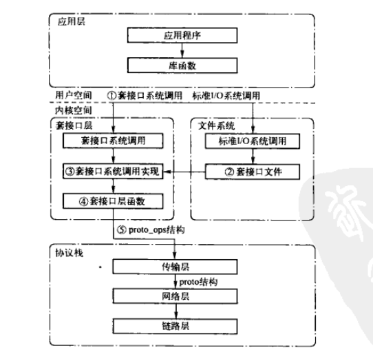
Figure 1: 套接口层将一般的请求转换为指定的协议操作
1. socket结构
套接口代表一条通信链路的一端，存储了该端点所有与通信相关的信息，包括：使用的协议、套接口状态、源和目的地址、到达的连接队列、数据缓存和可选标志等。
struct socket { socket_state state; //标识套接口所处的状态，某些状态只对TCP套接口有意义。 unsigned long flags; //标志，见下表 const struct proto_ops *ops; //指向套接口系统系统调用中选择对应类型的套接口层接口，用来将套接口映射到相应的传输层协议实现 struct fasync_struct *fasync_list; //存储异步通知队列 struct file *file; //指向与该套接口相关联的file结构指针 struct sock *sk; //指向与该套接口关联的传输控制块 wait_queue_head_t wait; //等待该套接口的进程队列 short type; //套接口的类型 };
| socket_state | 描述 |
|---|---|
| SS_FREE | 该套接口尚未分配，未使用 |
| SS_UNCONNECTED | 该套接口尚未连接 |
| SS_CONNECTING | 正在连接过程中 |
| SS_CONNECTED | 已经连接一个套接口 |
| SS_DISCONNECTING | 正在断开连接过程中 |
| flags | 描述 |
|---|---|
| SOCK_ASYNC_NOSPACE | 标识该套接口的发送队列已满 |
| SOCK_ASYNC_WAITDATA | 标识应用通过recv接收数据时，是否在等待数据的接收 |
| SOCK_NOSPACE | 标识非异步的情况下，该套接口的发送队列是否已满 |
| SOCK_PASSCRED | |
| SOCK_PASSSEC |
| 套接口类型 | 对应的 proto_ops 结构实例 |
|---|---|
| TCP | inet_stream_ops |
| UDP | inet_dgram_ops |
| RAW | inet_sockraw_ops |
| type | 描述 |
|---|---|
| SOCK_STREAM | 基于连接的套接口 |
| SOCK_DGRAM | 基于数据报的套接口 |
| SOCK_RAW | 原始套接口 |
| SOCK_RDM | 可靠传送报文套接口 |
| SOCK_SEQPACKET | 顺序分组套接口 |
| SOCK_DCCP | 数据包拥塞控制协议套接口 |
| SOCK_PACKET | 混杂模式套接口 |
2. proto_ops结构
proto_ops结构包含了一组与套接口系统调用相对应的传输层函数指针，可以把proto_ops结构看作是一张套接口系统调用到传输层函数的跳转表，其中有部分操作会继续通过 proto 结构跳转表，进入具体的传输层或网络层的处理。
struct proto_ops { int family; struct module *owner; int (*release) (struct socket *sock); int (*bind) (struct socket *sock, struct sockaddr *myaddr, int sockaddr_len); int (*connect) (struct socket *sock, struct sockaddr *vaddr, int sockaddr_len, int flags); int (*socketpair)(struct socket *sock1, struct socket *sock2); int (*accept) (struct socket *sock, struct socket *newsock, int flags); int (*getname) (struct socket *sock, struct sockaddr *addr, int *sockaddr_len, int peer); unsigned int (*poll) (struct file *file, struct socket *sock, struct poll_table_struct *wait); int (*ioctl) (struct socket *sock, unsigned int cmd, unsigned long arg); int (*compat_ioctl) (struct socket *sock, unsigned int cmd, unsigned long arg); int (*listen) (struct socket *sock, int len); int (*shutdown) (struct socket *sock, int flags); int (*setsockopt)(struct socket *sock, int level, int optname, char __user *optval, int optlen); int (*getsockopt)(struct socket *sock, int level, int optname, char __user *optval, int __user *optlen); int (*compat_setsockopt)(struct socket *sock, int level, int optname, char __user *optval, int optlen); int (*compat_getsockopt)(struct socket *sock, int level, int optname, char __user *optval, int __user *optlen); int (*sendmsg) (struct kiocb *iocb, struct socket *sock, struct msghdr *m, size_t total_len); int (*recvmsg) (struct kiocb *iocb, struct socket *sock, struct msghdr *m, size_t total_len, int flags); int (*mmap) (struct file *file, struct socket *sock, struct vm_area_struct * vma); ssize_t (*sendpage) (struct socket *sock, struct page *page, int offset, size_t size, int flags); };
proto_ops 结构的作用是，完成从与协议无关的套接口层到协议相关的传输层转接，proto 结构将传输层映射到网络层，因此，每个传输层协议都需要定义一个特定的 proto_ops 结构 和 proto 结构的实例。
IPv4协议族中，每个传输层协议对应一个 inet_protosw 结构，inet_protosw结构中包含了 proto_ops 结构和 proto 结构。 协议族中所有的 inet_protosw 结构的实例都定义在 inetsw_array[] 静态数组中。 网络子系统初始化时，根据每个结构的type成员（socket类型）将其注册到全局的 inetsw[] 数组。
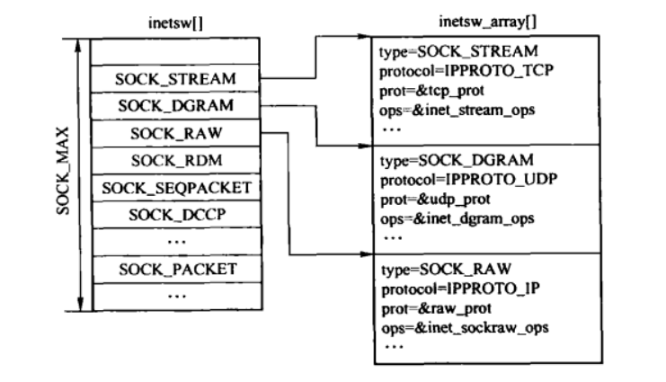
Figure 2: inetsw[]和inetsw_array[]
当需要创建套接口时，搜索 inetsw[] 数组，查找匹配的 inet_protosw 结构，并将inet_protosw结构的 proto_ops 成员存储在socket的ops中，proto成员则存储在sock结构的sk_prot中。
3. 套接口文件系统
每种文件都有各自的文件类型，套接口关联的文件类型为套接口文件。
3.1. 套接口文件系统类型
为了使套接口与文件描述符关联，并且支持特殊套接口层的i结点的分配和释放，为此定义了 sockfs文件系统类型 sock_fs_type，通过sockfs文件系统的get_sb接口和超级块操作集合中的 alloc_inode和 destroy_inode，可以分配和释放与套接口文件相关的i结点。
通过/proc/filesystems 文件，可以查看系统支持的文件系统。
static struct file_system_type sock_fs_type = { .name = "sockfs", .get_sb = sockfs_get_sb, .kill_sb = kill_anon_super, };
3.2. 套接口文件系统超级块操作接口
//套接口文件系统的操作接口定义 static struct super_operations sockfs_ops = { //套接口文件系统的i结点分配函数 .alloc_inode = sock_alloc_inode, //套接口文件系统的i结点释放函数 .destroy_inode = sock_destroy_inode, //获取套接口文件系统的状态信息 .statfs = simple_statfs, };
3.3. 套接口文件的inode
套接口文件系统的i结点和套接口是一一对应的。系统定义了 socket_alloc 结构，其中将 i结点和socket结构体组合，因此在分配i结点的同时，也分配了socket结构。
struct socket_alloc { struct socket socket; struct inode vfs_inode; };
通过上述结构，我们可以通过套接口定位到i结点，也可以通过i结点定位套接口。
3.4. sock_alloc_inode()
套接口文件系统有自身的i结点分配和释放函数。在通过文件系统模块分配或释放时，会根据文件系统调用对应的i结点分配和释放函数。
static struct inode *sock_alloc_inode(struct super_block *sb) { struct socket_alloc *ei; //从缓存中分配 socket_alloc 结构 ei = kmem_cache_alloc(sock_inode_cachep, GFP_KERNEL); if (!ei) return NULL; //初始化套接口的等待队列 init_waitqueue_head(&ei->socket.wait); ei->socket.fasync_list = NULL; ei->socket.state = SS_UNCONNECTED; ei->socket.flags = 0; ei->socket.ops = NULL; ei->socket.sk = NULL; ei->socket.file = NULL; return &ei->vfs_inode; }
3.5. sock_destroy_inode()
该函数是套接口文件系统的i结点释放接口。
static void sock_destroy_inode(struct inode *inode) { kmem_cache_free(sock_inode_cachep, container_of(inode, struct socket_alloc, vfs_inode)); }
4. 套接口文件
套接口有一套独立的系统调用，包括建立套接口、连接和IO操作等，由于在建立套接口后返回的是文件描述符，因此也可以通过标准的文件I/O操作来读写。 在创建套接口文件时，将其file结构的 f_op 成员指向 socket_file_ops。
/* * Socket files have a set of 'special' operations as well as the generic file ones. These don't appear * in the operation structures but are done directly via the socketcall() multiplexor. */ static struct file_operations socket_file_ops = { .owner = THIS_MODULE, .llseek = no_llseek, .aio_read = sock_aio_read, .aio_write = sock_aio_write, .poll = sock_poll, .unlocked_ioctl = sock_ioctl, .compat_ioctl = compat_sock_ioctl, .mmap = sock_mmap, .open = sock_no_open, /* special open code to disallow open via /proc */ .release = sock_close, .fasync = sock_fasync, .sendpage = sock_sendpage, .splice_write = generic_splice_sendpage, };
4.1. 套接口文件与套接口的绑定
应用层通过文件描述符来访问套接口，因此在通过socket系统调用创建套接口时，会通过调用 sock_map_fd() 函数将套接口和文件描述符绑定。
4.1.1. sock_map_fd()
int sock_map_fd(struct socket *sock) { struct file *newfile; //分配一个文件描述符和 file结构的实例 int fd = sock_alloc_fd(&newfile); if (likely(fd >= 0)) { //关联socket和file实例 int err = sock_attach_fd(sock, newfile); if (unlikely(err < 0)) { put_filp(newfile); put_unused_fd(fd); return err; } //添加到当前进程的已打开文件列表 fd_install(fd, newfile); } return fd; }
4.1.2. sock_attach_fd()
static int sock_attach_fd(struct socket *sock, struct file *file) { struct qstr this; char name[32]; this.len = sprintf(name, "[%lu]", SOCK_INODE(sock)->i_ino); this.name = name; this.hash = 0; //为套接口文件分配目录项 file->f_path.dentry = d_alloc(sock_mnt->mnt_sb->s_root, &this); if (unlikely(!file->f_path.dentry)) return -ENOMEM; //指定目录操作 file->f_path.dentry->d_op = &sockfs_dentry_operations; /* * We dont want to push this dentry into global dentry hash table. * We pretend dentry is already hashed, by unsetting DCACHE_UNHASHED * This permits a working /proc/$pid/fd/XXX on sockets */ file->f_path.dentry->d_flags &= ~DCACHE_UNHASHED; d_instantiate(file->f_path.dentry, SOCK_INODE(sock)); file->f_path.mnt = mntget(sock_mnt); file->f_mapping = file->f_path.dentry->d_inode->i_mapping; //将套接口和文件绑定。 sock->file = file; //将套接口的文件操作集合表 file->f_op = SOCK_INODE(sock)->i_fop = &socket_file_ops; file->f_mode = FMODE_READ | FMODE_WRITE; file->f_flags = O_RDWR; file->f_pos = 0; file->private_data = sock; //用来通过private_data访问套接口 return 0; }
4.2. 根据文件描述符获取套接口
套接口被创建后，通过其文件描述符来进行操作，sockfd_lookup_light()函数用来通过文件描述符的套接口。
4.2.1. sockfd_lookup_light()
static struct socket *sockfd_lookup_light(int fd, int *err, int *fput_needed) //操作成功时，返回是否对该文件进行减少引用计数的操作 { struct file *file; struct socket *sock; *err = -EBADF; //获取对应的file实例，并且获取是否需要减少对文件引用计数的标志 file = fget_light(fd, fput_needed); if (file) { sock = sock_from_file(file, err); if (sock) return sock; fput_light(file, *fput_needed); } return NULL; }
4.2.2. sock_from_file()
根据文件描述符获取套接口。
static struct socket *sock_from_file(struct file *file, int *err) { struct inode *inode; struct socket *sock; //判断是否为套接口文件 if (file->f_op == &socket_file_ops) return file->private_data; /* set in sock_map_fd */ //获取i结点 inode = file->f_path.dentry->d_inode; if (!S_ISSOCK(inode->i_mode)) { //不是套接口类型 *err = -ENOTSOCK; return NULL; } //通过i结点获取套接口指针 sock = SOCKET_I(inode); if (sock->file != file) { //file实例不同，则做校正 printk(KERN_ERR "socki_lookup: socket file changed!\n"); sock->file = file; } return sock; }
5. 进程、文件描述符和套接口
在 task_struct 结构中，files成员指向 file_struct 结构，该结构主要功能是管理 fd_array 指针数组指向的描述符，每个file实例表示一个打开的文件。
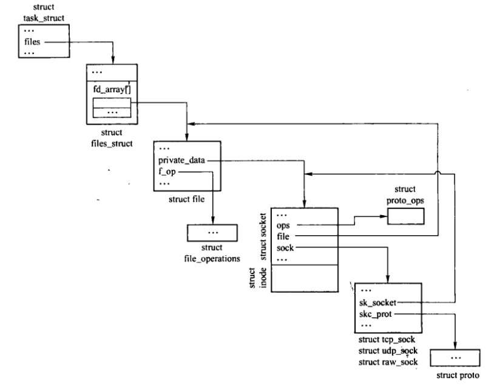
Figure 3: 进程、文件和套接口的关系
上图中仅显示了一个file结构。 通过 current->files->fd_array[fd] 就可以访问当前进程的某个文件描述符。 file结构中，f_op指向 file_operations结构（套接口文件指向的是 socket_file_ops）。
private_data指向相关I/O对象专用数据，对于套接口而言，指向的是相关的socket结构。 socket结构中的ops指向创建套接口时选中的协议的 proto_ops 结构。 传输控制块 tcp_sock 结构中的 skc_prot 则指向创建套接口时选中的对应协议的 proto 结构。
6. 套接口层的系统初始化
sock_init() 在系统启动时，在初始化列表中被调用，通过 core_initcall 宏加入到内核的初始化列表。
static int __init sock_init(void) { /* * Initialize sock SLAB cache. */ sk_init(); /* * Initialize skbuff SLAB cache */ skb_init(); /* * Initialize the protocols module. */ init_inodecache(); register_filesystem(&sock_fs_type); sock_mnt = kern_mount(&sock_fs_type); /* The real protocol initialization is performed in later initcalls. */ #ifdef CONFIG_NETFILTER netfilter_init(); #endif return 0; } core_initcall(sock_init); /* early initcall */
7. 套接口系统调用
下图展示了套接口层、传输层、网络层之间的调用关系以及之间的接口，一sendmsg调用为例： 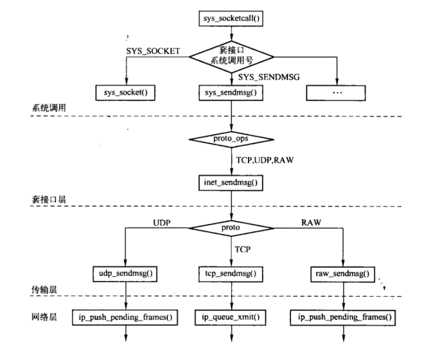
7.1. 套接口系统调用入口
Linux内核中，每个系统调用都被编号，当进程进行一个系统调用时，通过中断指令 “INT 0X80” (X86)，从用户空间进入系统空间，并将系统调用号作为参数传递。Linux系统中，所有系统调用都会进入系统的同一个地址system_call，在通过系统调用号，调用对应的函数。
- socket系统调用的总入口为 sys_socketcall()
/* call 是具体的操作码 args是指向数组的指针 */ asmlinkage long sys_socketcall(int call, unsigned long __user *args); //操作码定义 #define SYS_SOCKET 1 /* sys_socket(2) */ #define SYS_BIND 2 /* sys_bind(2) */ #define SYS_CONNECT 3 /* sys_connect(2) */ #define SYS_LISTEN 4 /* sys_listen(2) */ #define SYS_ACCEPT 5 /* sys_accept(2) */ #define SYS_GETSOCKNAME 6 /* sys_getsockname(2) */ #define SYS_GETPEERNAME 7 /* sys_getpeername(2) */ #define SYS_SOCKETPAIR 8 /* sys_socketpair(2) */ #define SYS_SEND 9 /* sys_send(2) */ #define SYS_RECV 10 /* sys_recv(2) */ #define SYS_SENDTO 11 /* sys_sendto(2) */ #define SYS_RECVFROM 12 /* sys_recvfrom(2) */ #define SYS_SHUTDOWN 13 /* sys_shutdown(2) */ #define SYS_SETSOCKOPT 14 /* sys_setsockopt(2) */ #define SYS_GETSOCKOPT 15 /* sys_getsockopt(2) */ #define SYS_SENDMSG 16 /* sys_sendmsg(2) */ #define SYS_RECVMSG 17 /* sys_recvmsg(2) */
- sys_socketcall()
/* * System call vectors. * * Argument checking cleaned up. Saved 20% in size. * This function doesn't need to set the kernel lock because * it is set by the callees. */ asmlinkage long sys_socketcall(int call, unsigned long __user *args) { unsigned long a[6]; unsigned long a0, a1; int err; if (call < 1 || call > SYS_RECVMSG) return -EINVAL; /* copy_from_user should be SMP safe. */ if (copy_from_user(a, args, nargs[call])) return -EFAULT; err = audit_socketcall(nargs[call] / sizeof(unsigned long), a); if (err) return err; a0 = a[0]; a1 = a[1]; switch (call) { case SYS_SOCKET: //创建套接口 err = sys_socket(a0, a1, a[2]); break; case SYS_BIND: err = sys_bind(a0, (struct sockaddr __user *)a1, a[2]); break; case SYS_CONNECT: err = sys_connect(a0, (struct sockaddr __user *)a1, a[2]); break; case SYS_LISTEN: err = sys_listen(a0, a1); break; case SYS_ACCEPT: err = sys_accept(a0, (struct sockaddr __user *)a1, (int __user *)a[2]); break; case SYS_GETSOCKNAME: err = sys_getsockname(a0, (struct sockaddr __user *)a1, (int __user *)a[2]); break; case SYS_GETPEERNAME: err = sys_getpeername(a0, (struct sockaddr __user *)a1, (int __user *)a[2]); break; case SYS_SOCKETPAIR: err = sys_socketpair(a0, a1, a[2], (int __user *)a[3]); break; case SYS_SEND: err = sys_send(a0, (void __user *)a1, a[2], a[3]); break; case SYS_SENDTO: err = sys_sendto(a0, (void __user *)a1, a[2], a[3], (struct sockaddr __user *)a[4], a[5]); break; case SYS_RECV: err = sys_recv(a0, (void __user *)a1, a[2], a[3]); break; case SYS_RECVFROM: err = sys_recvfrom(a0, (void __user *)a1, a[2], a[3], (struct sockaddr __user *)a[4], (int __user *)a[5]); break; case SYS_SHUTDOWN: err = sys_shutdown(a0, a1); break; case SYS_SETSOCKOPT: err = sys_setsockopt(a0, a1, a[2], (char __user *)a[3], a[4]); break; case SYS_GETSOCKOPT: err = sys_getsockopt(a0, a1, a[2], (char __user *)a[3], (int __user *)a[4]); break; case SYS_SENDMSG: err = sys_sendmsg(a0, (struct msghdr __user *)a1, a[2]); break; case SYS_RECVMSG: err = sys_recvmsg(a0, (struct msghdr __user *)a1, a[2]); break; default: err = -EINVAL; break; } return err; }
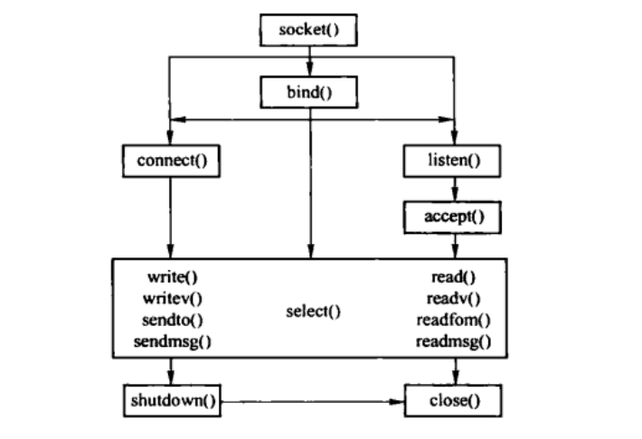 \[\]\[\]\[\]\[\]\[\]\[\]\[\]\[\]\[\]$$$
7.2. socket系统调用
7.2.1. sys_socket()
sys_socket()把套接口的创建和与此套接口关联的文件描述符的分配做了封装。
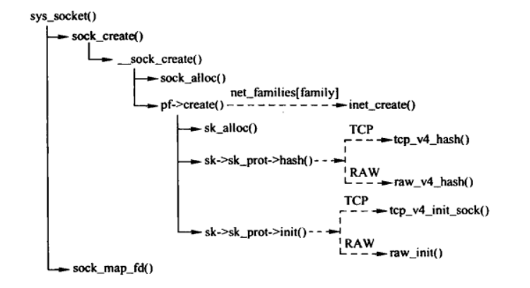
Figure 4: socket系统调用中主要函数的调用关系
asmlinkage long sys_socket(int family, int type, int protocol) { int retval; struct socket *sock; //创建并初始化套接口 retval = sock_create(family, type, protocol, &sock); if (retval < 0) goto out; //创建文件描述符，并进行绑定 retval = sock_map_fd(sock); if (retval < 0) goto out_release; out: /* It may be already another descriptor 8) Not kernel problem. */ return retval; out_release: sock_release(sock); return retval; }
7.2.2. sock_create()
实际调用__sock_create()函数。
static int __sock_create(int family, //协议族 int type, //套接口类型 int protocol, //传输层协议 struct socket **res, //输出参数 int kern) //标识是由应用程序还是内核创建 { int err; struct socket *sock; const struct net_proto_family *pf; /* 检查参数的合法性 */ if (family < 0 || family >= NPROTO) return -EAFNOSUPPORT; if (type < 0 || type >= SOCK_MAX) return -EINVAL; /* 兼容性。 SOCK_PACKET已经移除，而是使用PF_PACKET替代 */ if (family == PF_INET && type == SOCK_PACKET) { static int warned; if (!warned) { warned = 1; printk(KERN_INFO "%s uses obsolete (PF_INET,SOCK_PACKET)\n", current->comm); } family = PF_PACKET; } err = security_socket_create(family, type, protocol, kern); if (err) return err; /* * Allocate the socket and allow the family to set things up. if * the protocol is 0, the family is instructed to select an appropriate * default. */ sock = sock_alloc(); //分配套接口以及关联的i结点，并初始化 if (!sock) { if (net_ratelimit()) printk(KERN_WARNING "socket: no more sockets\n"); return -ENFILE; /* Not exactly a match, but its the closest posix thing */ } sock->type = type; #if defined(CONFIG_KMOD) /* Attempt to load a protocol module if the find failed. * * 12/09/1996 Marcin: But! this makes REALLY only sense, if the user * requested real, full-featured networking support upon configuration. * Otherwise module support will break! */ if (net_families[family] == NULL) request_module("net-pf-%d", family); //动态加载模块 #endif rcu_read_lock(); //获取对应协议族的 net_proto_family结构 pf = rcu_dereference(net_families[family]); err = -EAFNOSUPPORT; if (!pf) goto out_release; /* * We will call the ->create function, that possibly is in a loadable * module, so we have to bump that loadable module refcnt first. *///如果协议族的net_proto_family是以内核模块的加载，则增加引用，防止卸载 if (!try_module_get(pf->owner)) goto out_release; /* Now protected by module ref count */ rcu_read_unlock(); //调用协议族的create函数，对套接口进行初始化，同时还创建传输控制块 err = pf->create(sock, protocol); if (err < 0) goto out_module_put; /* * Now to bump the refcnt of the [loadable] module that owns this * socket at sock_release time we decrement its refcnt. *///如果套接口对应的proto_ops结构实例是动态加载的内核模块，则增加引用，防止卸载 if (!try_module_get(sock->ops->owner)) goto out_module_busy; /* * Now that we're done with the ->create function, the [loadable] * module can have its refcnt decremented */ module_put(pf->owner); err = security_socket_post_create(sock, family, type, protocol, kern); if (err) goto out_release; *res = sock; return 0; out_module_busy: err = -EAFNOSUPPORT; out_module_put: sock->ops = NULL; module_put(pf->owner); out_sock_release: sock_release(sock); return err; out_release: rcu_read_unlock(); goto out_sock_release; }
7.2.3. inet_create()
该函数用于创建与套接口对应的传输控制块，并建立关联。
/* * Create an inet socket. */ static int inet_create(struct socket *sock, int protocol) { struct sock *sk; struct list_head *p; struct inet_protosw *answer; struct inet_sock *inet; struct proto *answer_prot; unsigned char answer_flags; char answer_no_check; int try_loading_module = 0; int err; sock->state = SS_UNCONNECTED; /* Look for the requested type/protocol pair. */ answer = NULL; lookup_protocol: err = -ESOCKTNOSUPPORT; rcu_read_lock(); //遍历 inetsw 散列表，获取对应的 inet_protosw 结构实例 list_for_each_rcu(p, &inetsw[sock->type]) { answer = list_entry(p, struct inet_protosw, list); /* Check the non-wild match. */ if (protocol == answer->protocol) { if (protocol != IPPROTO_IP) break; } else { /* Check for the two wild cases. */ if (IPPROTO_IP == protocol) { protocol = answer->protocol; break; } if (IPPROTO_IP == answer->protocol) break; } err = -EPROTONOSUPPORT; answer = NULL; } //如果获取失败，则尝试通过动态加载内核模块来获取 if (unlikely(answer == NULL)) { if (try_loading_module < 2) {//最多尝试两次 rcu_read_unlock(); /* * Be more specific, e.g. net-pf-2-proto-132-type-1 * (net-pf-PF_INET-proto-IPPROTO_SCTP-type-SOCK_STREAM) */ if (++try_loading_module == 1) request_module("net-pf-%d-proto-%d-type-%d", PF_INET, protocol, sock->type); /* * Fall back to generic, e.g. net-pf-2-proto-132 * (net-pf-PF_INET-proto-IPPROTO_SCTP) */ else request_module("net-pf-%d-proto-%d", PF_INET, protocol); goto lookup_protocol; } else goto out_rcu_unlock; } err = -EPERM; if (answer->capability > 0 && !capable(answer->capability)) goto out_rcu_unlock; //设置套接口的套接口层和传输层之间的接口 ops sock->ops = answer->ops; answer_prot = answer->prot; answer_no_check = answer->no_check; answer_flags = answer->flags; rcu_read_unlock(); BUG_TRAP(answer_prot->slab != NULL); err = -ENOBUFS; //分配传输控制块 sk = sk_alloc(PF_INET, GFP_KERNEL, answer_prot, 1); if (sk == NULL) goto out; err = 0; sk->sk_no_check = answer_no_check; //传输控制块是否需要校验和 if (INET_PROTOSW_REUSE & answer_flags) //是否可以重用地址和端口 sk->sk_reuse = 1; inet = inet_sk(sk); //标识是否是面向连接的传输控制块 inet->is_icsk = (INET_PROTOSW_ICSK & answer_flags) != 0; //如果是原始套接口，则设置端口为 协议号。 if (SOCK_RAW == sock->type) { inet->num = protocol; if (IPPROTO_RAW == protocol) inet->hdrincl = 1; //如果是RAW协议，需要自己构建IP首部 } if (ipv4_config.no_pmtu_disc)//判断传输控制块是否支持PMTU inet->pmtudisc = IP_PMTUDISC_DONT; else inet->pmtudisc = IP_PMTUDISC_WANT; inet->id = 0; //对传输控制块进行初始化 sock_init_data(sock, sk); sk->sk_destruct = inet_sock_destruct; sk->sk_family = PF_INET; sk->sk_protocol = protocol; sk->sk_backlog_rcv = sk->sk_prot->backlog_rcv; //后备队列接收函数 inet->uc_ttl = -1; inet->mc_loop = 1; inet->mc_ttl = 1; inet->mc_index = 0; inet->mc_list = NULL; sk_refcnt_debug_inc(sk); //如果传输控制块的num设置了本地端口号，则需要设置传输控制块的sport为网络字节序的本地端口 if (inet->num) { /* It assumes that any protocol which allows * the user to assign a number at socket * creation time automatically * shares. */ inet->sport = htons(inet->num); /* 将传输控制块加入到管理的散列表 */ sk->sk_prot->hash(sk); } if (sk->sk_prot->init) { err = sk->sk_prot->init(sk); if (err) sk_common_release(sk); } out: return err; out_rcu_unlock: rcu_read_unlock(); goto out; }
7.3. bind系统调用
7.3.1. sys_bind()
bind()系统调用用于将本地的地址和传输层端口，与套接口关联起来。
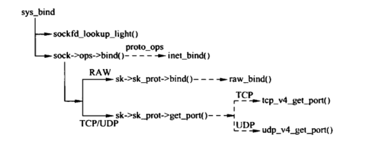
Figure 5: bind()调用过程
/* * Bind a name to a socket. Nothing much to do here since it's * the protocol's responsibility to handle the local address. * * We move the socket address to kernel space before we call * the protocol layer (having also checked the address is ok). */ asmlinkage long sys_bind(int fd, struct sockaddr __user *umyaddr/*绑定的地址*/, int addrlen) { struct socket *sock; char address[MAX_SOCK_ADDR]; int err, fput_needed; //根据文件描述符，获取套接口指针， fput_needed是返回值，表示是否需要减少文件引用计数 sock = sockfd_lookup_light(fd, &err, &fput_needed); if(sock) { //复制用户空间的数据到内核空间 err = move_addr_to_kernel(umyaddr, addrlen, address); if (err >= 0) { err = security_socket_bind(sock, (struct sockaddr *)address, addrlen); if (!err) //调用协议族的bind接口，IPv4中是 inet_bind() err = sock->ops->bind(sock, (struct sockaddr *) address, addrlen); } fput_light(sock->file, fput_needed); //根据fput_light操作文件引用计数。 } return err; }
7.3.2. 套接口层的实现 inet_bind()
int inet_bind(struct socket *sock, struct sockaddr *uaddr, int addr_len) { struct sockaddr_in *addr = (struct sockaddr_in *)uaddr; struct sock *sk = sock->sk; struct inet_sock *inet = inet_sk(sk); unsigned short snum; int chk_addr_ret; int err; /* 套接口对应的传输层是否实现了自身的bind函数（例如SOCK_RAW） */ if (sk->sk_prot->bind) { err = sk->sk_prot->bind(sk, uaddr, addr_len); goto out; } err = -EINVAL; if (addr_len < sizeof(struct sockaddr_in)) goto out; //获取地址类型 chk_addr_ret = inet_addr_type(addr->sin_addr.s_addr); /* Not specified by any standard per-se, however it breaks too * many applications when removed. It is unfortunate since * allowing applications to make a non-local bind solves * several problems with systems using dynamic addressing. * (ie. your servers still start up even if your ISDN link * is temporarily down) */ //校验是否可以进行地址和端口的绑定 err = -EADDRNOTAVAIL; if (!sysctl_ip_nonlocal_bind && !inet->freebind && addr->sin_addr.s_addr != INADDR_ANY && chk_addr_ret != RTN_LOCAL && chk_addr_ret != RTN_MULTICAST && chk_addr_ret != RTN_BROADCAST) goto out; snum = ntohs(addr->sin_port); err = -EACCES; //校验绑定的端口，判断进程是否允许绑定小于1024的端口 if (snum && snum < PROT_SOCK && !capable(CAP_NET_BIND_SERVICE)) goto out; /* We keep a pair of addresses. rcv_saddr is the one * used by hash lookups, and saddr is used for transmit. * * In the BSD API these are the same except where it * would be illegal to use them (multicast/broadcast) in * which case the sending device address is used. */ lock_sock(sk); /* Check these errors (active socket, double bind). */ err = -EINVAL; if (sk->sk_state != TCP_CLOSE || inet->num) goto out_release_sock; //将地址设置到传输控制块中 inet->rcv_saddr = inet->saddr = addr->sin_addr.s_addr; if (chk_addr_ret == RTN_MULTICAST || chk_addr_ret == RTN_BROADCAST) inet->saddr = 0; /* Use device */ /* 调用传输层接口的get_port()，进行具体传输层的地址绑定 */ if (sk->sk_prot->get_port(sk, snum)) { inet->saddr = inet->rcv_saddr = 0; err = -EADDRINUSE; goto out_release_sock; } if (inet->rcv_saddr) sk->sk_userlocks |= SOCK_BINDADDR_LOCK;//标识绑定了本地地址 if (snum) sk->sk_userlocks |= SOCK_BINDPORT_LOCK;//标识绑定了本地端口 inet->sport = htons(inet->num); inet->daddr = 0; inet->dport = 0; sk_dst_reset(sk); err = 0; out_release_sock: release_sock(sk); out: return err; }
7.4. listen系统调用
listen系统调用用于通知进程准备好接收套接口上的连接请求，同时指定该套接口上可以排队的连接数。如果超过限制，则拒绝连接请求。
asmlinkage long sys_listen(int fd, int backlog) { struct socket *sock; int err, fput_needed; sock = sockfd_lookup_light(fd, &err, &fput_needed); if (sock) { if ((unsigned)backlog > sysctl_somaxconn) //校验限制是否合法 backlog = sysctl_somaxconn; err = security_socket_listen(sock, backlog); if (!err)//调用对应传输层的listen操作 err = sock->ops->listen(sock, backlog); fput_light(sock->file, fput_needed); } return err; }
7.5. accept系统调用
调用listen之后，可以通过accept等待连接请求。
/* * For accept, we attempt to create a new socket, set up the link * with the client, wake up the client, then return the new * connected fd. We collect the address of the connector in kernel * space and move it to user at the very end. This is unclean because * we open the socket then return an error. * * 1003.1g adds the ability to recvmsg() to query connection pending * status to recvmsg. We need to add that support in a way thats * clean when we restucture accept also. */ asmlinkage long sys_accept(int fd, struct sockaddr __user *upeer_sockaddr, int __user *upeer_addrlen) { struct socket *sock, *newsock; struct file *newfile; int err, len, newfd, fput_needed; char address[MAX_SOCK_ADDR]; sock = sockfd_lookup_light(fd, &err, &fput_needed); if (!sock) goto out; err = -ENFILE; if (!(newsock = sock_alloc()))//分配新的套接口 goto out_put; newsock->type = sock->type; //套接口类型 newsock->ops = sock->ops; //套接口的系统调用跳转表 /* * We don't need try_module_get here, as the listening socket (sock) * has the protocol module (sock->ops->owner) held. */ __module_get(newsock->ops->owner); newfd = sock_alloc_fd(&newfile); //分配文件描述符 if (unlikely(newfd < 0)) { err = newfd; sock_release(newsock); goto out_put; } //和套接口绑定。 err = sock_attach_fd(newsock, newfile); if (err < 0) goto out_fd; err = security_socket_accept(sock, newsock); if (err) goto out_fd; //调用对应传输协议的accept操作。 err = sock->ops->accept(sock, newsock, sock->file->f_flags); if (err < 0) goto out_fd; if (upeer_sockaddr) {//需要获取客户端的地址 if (newsock->ops->getname(newsock, (struct sockaddr *)address, &len, 2) < 0) { err = -ECONNABORTED; goto out_fd; } err = move_addr_to_user(address, len, upeer_sockaddr, upeer_addrlen); if (err < 0) goto out_fd; } /* File flags are not inherited via accept() unlike another OSes. */ //将文件描述符添加到进程的已打开文件列表中。 fd_install(newfd, newfile); err = newfd; security_socket_post_accept(sock, newsock); out_put: fput_light(sock->file, fput_needed); out: return err; out_fd: fput(newfile); put_unused_fd(newfd); goto out_put; }
7.6. connect系统调用
对于面向连接的协议（TCP），connect() 会与指定的外部地址建立连接。
对于无连接协议（UDP或ICMP），connect记录外部地址，以便发送数据报时使用。
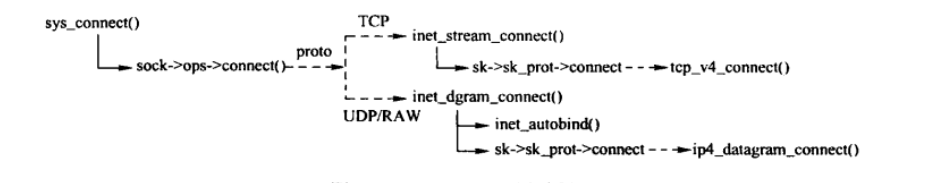
Figure 6: conect()调用过程
/* * Attempt to connect to a socket with the server address. The address * is in user space so we verify it is OK and move it to kernel space. * * For 1003.1g we need to add clean support for a bind to AF_UNSPEC to * break bindings * * NOTE: 1003.1g draft 6.3 is broken with respect to AX.25/NetROM and * other SEQPACKET protocols that take time to connect() as it doesn't * include the -EINPROGRESS status for such sockets. */ asmlinkage long sys_connect(int fd, struct sockaddr __user *uservaddr, int addrlen) { struct socket *sock; char address[MAX_SOCK_ADDR]; int err, fput_needed; sock = sockfd_lookup_light(fd, &err, &fput_needed); if (!sock) goto out; err = move_addr_to_kernel(uservaddr, addrlen, address); if (err < 0) goto out_put; err = security_socket_connect(sock, (struct sockaddr *)address, addrlen); if (err) goto out_put; //调用传输层的connect，tcp为 inet_stream_connect() err = sock->ops->connect(sock, (struct sockaddr *)address, addrlen, sock->file->f_flags); out_put: fput_light(sock->file, fput_needed); out: return err; }
7.7. shutdown系统调用
7.7.1. sys_shutdown()
shutdown 用于关闭连接的读通道、写通道或者读写通道，如果关闭读通道，则丢弃还未读取的数据和之后到达的数据。对于写通道，会调用对应的协议处理，例如TCP会发送所有剩余的数据，并在发送完成后发送FIN。
为了删除和释放文件描述符，还需要调用close()。
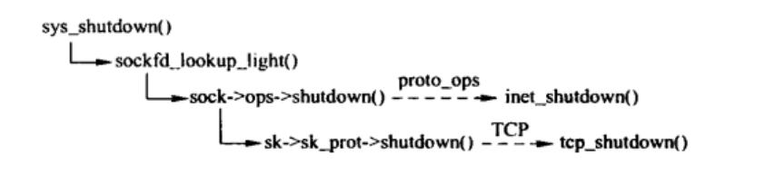
Figure 7: shutdown()系统调用过程
asmlinkage long sys_shutdown(int fd, int how) { int err, fput_needed; struct socket *sock; sock = sockfd_lookup_light(fd, &err, &fput_needed); if (sock != NULL) { err = security_socket_shutdown(sock, how); if (!err) err = sock->ops->shutdown(sock, how); fput_light(sock->file, fput_needed); } return err; }
7.7.2. 套接口层的实现
inet_shutdown()
int inet_shutdown(struct socket *sock, int how) { struct sock *sk = sock->sk; int err = 0; /* This should really check to make sure * the socket is a TCP socket. (WHY AC...) */ how++; /* maps 0->1 has the advantage of making bit 1 rcvs and 1->2 bit 2 snds. 2->3 */ if ((how & ~SHUTDOWN_MASK) || !how) /* MAXINT->0 */ return -EINVAL; lock_sock(sk); if (sock->state == SS_CONNECTING) { //根据传输控制块的状态重新设置套接口状态，使得套接口在完成关闭前只有两种状态 if ((1 << sk->sk_state) & (TCPF_SYN_SENT | TCPF_SYN_RECV | TCPF_CLOSE)) sock->state = SS_DISCONNECTING; else sock->state = SS_CONNECTED; } switch (sk->sk_state) { case TCP_CLOSE: err = -ENOTCONN; /* Hack to wake up other listeners, who can poll for POLLHUP, even on eg. unconnected UDP sockets -- RR */ default: sk->sk_shutdown |= how; if (sk->sk_prot->shutdown) sk->sk_prot->shutdown(sk, how); //调用传输层的shutdown()操作 break; /* Remaining two branches are temporary solution for missing * close() in multithreaded environment. It is _not_ a good idea, * but we have no choice until close() is repaired at VFS level. */ case TCP_LISTEN: if (!(how & RCV_SHUTDOWN)) //如果是关闭的接收方向，则和TCP_SYN_SENT状态处理相同 break; /* Fall through */ case TCP_SYN_SENT: //处于建立连接过程中 err = sk->sk_prot->disconnect(sk, O_NONBLOCK); sock->state = err ? SS_DISCONNECTING : SS_UNCONNECTED; break; } /* Wake up anyone sleeping in poll. */ sk->sk_state_change(sk); //唤醒传输控制块的等待队列上的进程。 release_sock(sk); return err; }
7.8. close系统调用
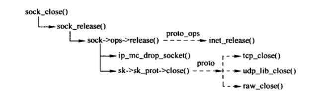
Figure 8: close系统调用
static int sock_close(struct inode *inode, struct file *filp) { /* * It was possible the inode is NULL we were * closing an unfinished socket. */ if (!inode) { printk(KERN_DEBUG "sock_close: NULL inode\n"); return 0; } //从与文件描述符关联的套接口的异步通知队列中删除对应的结点 sock_fasync(-1, filp, 0); //关闭套接口。 sock_release(SOCKET_I(inode)); return 0; }
7.8.1. 关闭套接口
/** * sock_release - close a socket * @sock: socket to close * * The socket is released from the protocol stack if it has a release * callback, and the inode is then released if the socket is bound to * an inode not a file. */ void sock_release(struct socket *sock) { if (sock->ops) { //套接口层的proto_ops操作接口 struct module *owner = sock->ops->owner; sock->ops->release(sock); //IPv4中为 inet_release(),其中调用具体传输层的close操作。 sock->ops = NULL; module_put(owner); } //之前已经处理了异步通知队列，如果不为空，则打印信息 if (sock->fasync_list) printk(KERN_ERR "sock_release: fasync list not empty!\n"); get_cpu_var(sockets_in_use)--; put_cpu_var(sockets_in_use); if (!sock->file) { iput(SOCK_INODE(sock)); return; } sock->file = NULL; }
7.8.2. 套接口层的实现
/* * The peer socket should always be NULL (or else). When we call this * function we are destroying the object and from then on nobody * should refer to it. */ int inet_release(struct socket *sock) { struct sock *sk = sock->sk; if (sk) { long timeout; /* 离开加入的多播组 */ ip_mc_drop_socket(sk); /* If linger is set, we don't return until the close * is complete. Otherwise we return immediately. The * actually closing is done the same either way. * * If the close is due to the process exiting, we never * linger.. */ timeout = 0; //SOCK_LINGER表示如果有数据带发送，则延迟关闭 if (sock_flag(sk, SOCK_LINGER) && !(current->flags & PF_EXITING)) //进程不处于退出过程中 timeout = sk->sk_lingertime; //获取延迟关闭的时间 sock->sk = NULL; sk->sk_prot->close(sk, timeout); //调用传输层的close接口 } return 0; }
7.9. select系统调用实现
select用来实现非阻塞 I/O。
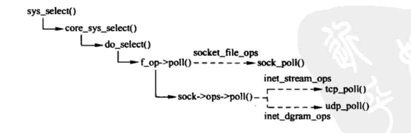
Figure 9: select系统调用